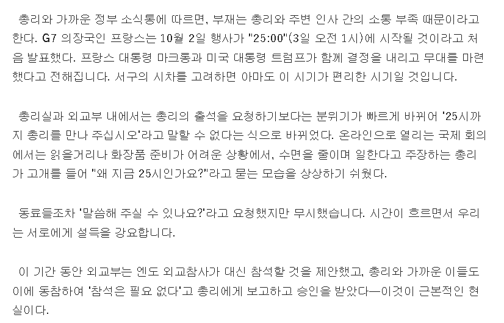

https://president.jp/articles/-/121717
디젤 가격 조정 문제로 G7 정상 온라인 회의가 개최됐다.
그런데 회의 시간이 일본 시간대로 11월 3일 새벽 1시임.
총리 관저나 외무성은 무서워서 총리에게 말하지 못했다.
왜냐면 취침해야 될 시간대에 깨어나 있어야 한다고 말하면
다카이치가 자신들에게 성질낼 게 뻔했으니까.
그렇게 설득 역할만 서로에게 떠넘기다가 시간만 지남.
이것도 저것도 못 한 채 불참 의사도 밝히지 않고 뭉게다가,
프랑스 측에서 개최 시간을 2시간 앞당겨서 개최하기로 통보.
하지만 다카이치 총리는 최종적으로 불참했다.
댓글
수집 당시 댓글 41개
초코마시쩡 · 8 시간 전
개선죽문 · 8 시간 전
레전드네
나라꼴 잘 굴러간다 ㅋㅋㅋㅋㅋ
· 년후탈퇴할거 · 7 시간 전
하지만 지지도는 매우 높더라
· 요라요라용 · 7 시간 전
세습 국회의원 을 뽑아주는 국민들 있는 나라인데
어련할까
· 개선죽문 · 6 시간 전
최근 지지율 땅바닥에 처박았더만 회복함?
· 년후탈퇴할거 · 6 시간 전
어제 개드립 글 보니까 65 되던데?
· 개선죽문 · 6 시간 전
확인해보니 반등했었네
초기보단 떨어져도 아직 높네
Johndoe · 8 시간 전
임팔 작전에서 굶어 죽어가는 일본군들의 모습을 알려면 여명의 눈동자에서 먹을 게 없어서 풀뿌리를 씹고, 독충인 노래기를 잡고, 뱀까지 산 채로 먹는 장면을 보자. 그게 바로 임팔 작전의 현실이다.
휘하 부대장이 계속 철수를 요구하고 부하들이 전장에서 뜻 없이 죽어나가는 상황을 알면서도 진격하라며 계속 독촉하고선 무타구치 자신은 초조했다.
작전 실패가 확실해서 상황을 파악하러 온 버마 사령관 가와베가 무타구치를 찾아왔지만 둘 다 아무 말도 못 했고 달라진 것도 없었다. 그 까닭이 참 어처구니없었다.
[가와베: 무타구치 중장은 무언가 하고 싶은 말이 있는 것처럼 보였다. 초조해하는 기색이 역력했지만 구태여 캐묻지는 않았다.
무타구치: 나는 가와베 장군의 참된 심중은 작전 지속에 대한 나의 생각을 떠보기 위한 것인 줄 알고 있었다. 그러나 나는 아무래도 그것을 장군에게 실토할 수 없었다. 나는 다만 먼지투성이인 내 풍모를 보고 장군이 알아차려 주기만을 바랐다.
무타구치: 저는 작전이 실패했음을 깨달았습니다. 하지만 상부에 보고를 할 수 없었기에 작전을 그대로 진행하면서 명령이 하달되기만을 기다릴 수밖에 없었습니다.
-전후 미군의 심문을 받으면서 진술한 내용]
나름 일종의 전통일지도 ㅋㅋㅋㅋㅋㅋㅋㅋㅋㅋㅋㅋㅋㅋㅋㅋㅋㅋㅋ
· 스탠퍼드국문학도 · 7 시간 전
중장쯤 됐으면 책임감을 좀 가지란 말이다아앗
· 노머고 · 7 시간 전
렴야 열사님의 마음을 몰라준 가와베가 잘못했네
눈치없는 인간
· 틀랄록 · 7 시간 전
덕분에 미국이 잘했다고 처벌 안하고 풀어줌ㅋ
도로뿌앵 · 8 시간 전
왜 화를 냄? 국가에 유리하게 회의시간 못잡았다고 갈구나?
· 두둠칫둠ㅅ · 7 시간 전
다카이치면 그럴거같긴해
· 쮸보봅 · 7 시간 전
생리하나
· 노잼외국인 · 7 시간 전
권위가 지랄 염병에서 나온다는 버러지들이 꽤 있지 ㅋㅋ
그런 버러지들은 작게는 가족관계부터 크게는 국가까지 삐걱댈 정도로 사고를 쳐댐
국가에 유리하게 X
내가 불편하게 잡았으니 이 새끼들이 내 권위를 인정하지 않는구나 O
· 그래당장꺼져 · 4 시간 전
자신에게 안좋은 소식을 들고왔다고 마구 화내는 사람이 종종 있음. 그게 어느 정도 선을 넘으면 아랫사람들이 이젠 무서워서 아무리 중요한 거여도 함부로 안좋은 소식을 전달하질 못하게 됨. 다카이치가 진짜 이정도인지는 몰랐음
비무니 · 7 시간 전
.........!?
ravvit · 7 시간 전
뭔소리야 이게
크킹충 · 7 시간 전
총리가 잠자야 하는 시간에 회의가 잡히면 어떻게해야할지에 대한 매뉴얼이 없었나보네
· khruangbin · 2 시간 전
정확히는 다카이치 본인이 2시간인가? 잠 줄여가면서 일 한다고 어필해서 그런거임 ㅋㅋㅋ
‘수면을 줄이며 일한다고 주장하는 총리…‘ 이 부분이 아마 그 부분일 듯 ㅋㅋㅋㅋ
1루2틀3일4흘 · 7 시간 전
다카이치는 외교는 전혀 관심없고 지지율따먹기만 관심있잖아 ㅋㅋㅋ
취임하자마자 중국에다 뻐큐날리는거보고 기겁함ㅋㅋ
최고의맥주부드바르 · 7 시간 전
에이스a · 7 시간 전
아소 다로 자민당 부총재랑 그 날 저녁에
회식해서 불참한거 아니냐는 의혹이 있네
오뒷세이아 · 7 시간 전
의자에 앉아 있는 시간만 많지 뭐 하나 한게 없는 년이란 소리잖아
킴취워리오 · 7 시간 전
냄새나는거잘덮네
너인생5년후 · 7 시간 전
일본쯤 되는 나라가 이래도되냐
발로그림 · 7 시간 전
???: 노르망디에 연합군이 상륙해서 파죽지세로 셀부르와 인근 내륙 거점을 점령하려고 하고 있으니까 빨리 총통께 예비 기갑사단들을 동원하는 명령을 내려 달라 하시오!!
???: 총통은 지금 주무시고 계십니다. 절대 깨울 수 없어요.(히틀러는 새벽 2시나 3시까지 영화를 보거나 측근들과 노닥거리다가 잠들었고 보통 그 다음날 11시나 오후 1시에 일어났다.)
메지로 · 7 시간 전
ㅋㅋㅋㅋ 이거이거
국세청장 · 7 시간 전
개드립com · 7 시간 전
안주무신다하지않았음?
듀플로 · 7 시간 전
다카이치는 쿨펀섹을 총리로 만들기 위한 미끼 같아
다카이치를 보다가 쿨펀섹을 보면 선녀 같이 느껴지게
paperback · 7 시간 전
서방세계는 왜 새벽에 회의해요?
星間나그네 · 6 시간 전
사슴맛치커리 · 6 시간 전
서양의 요청에도 굴하지 않고 할건 하는 대카이치
비숑은산책중 · 6 시간 전
거짓말하지마 진짜로...
토막난생코알라 · 6 시간 전
일본은 알면 알수록,,
년차글쟁이 · 5 시간 전
국가 체급이 워낙 커서
쓰러지는 것조차 느리구나
아노말리 · 3 시간 전
흥 곤쥬님 잠잘 시간이야
ㅇ益ㅇ · 2 시간 전
달랏밀크 · 1 시간 전
ㅋㅋ진짜 돌은나라네 나라운영을 원님하듯하네
K084401 · 44 분 전
술 꼬라 박아서 못 나갔다 기사도 있더라